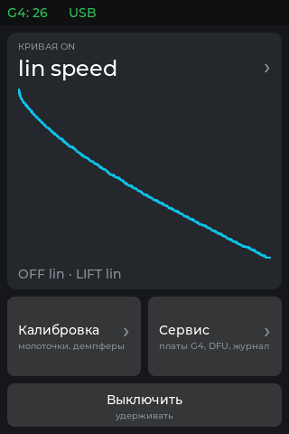
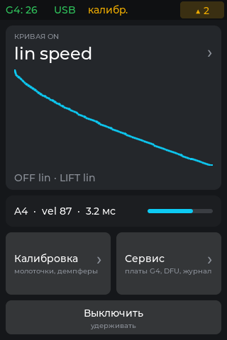
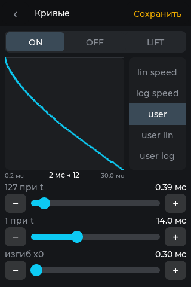
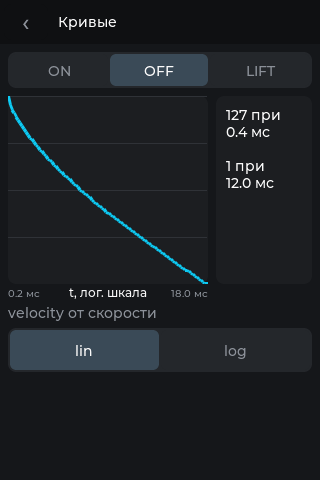
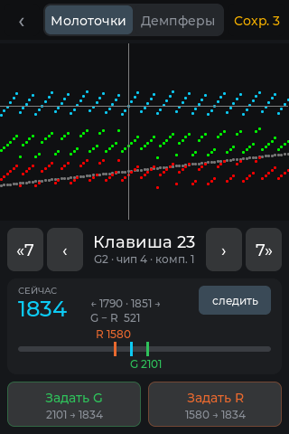
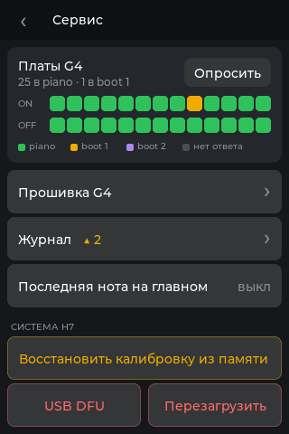
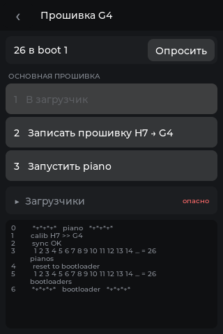
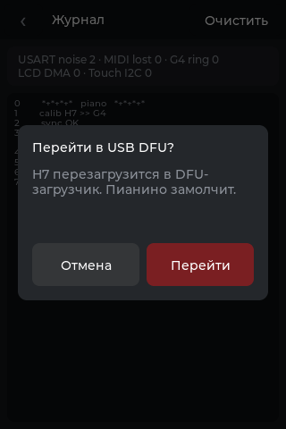

Главный экран совмещал игру, калибровку, прошивку G4, память и журнал. Теперь главный экран только для игры, под ним три раздела. Глубина меню не больше двух уровней, кнопка «назад» на всех экранах в одном месте. Новые экраны здесь — рендеры LVGL с хоста из того же проекта EEZ, что и прошивка: те же шрифты, координаты и стили.
16 элементов: 11 кнопок, 3 роллера, журнал. Цвета текста как в проекте EEZ.
PRESSED, то есть от касания, и стоят вплотную к «jump to usb dfu». Всё это видно во время игры.action_piano_off → to_sleep).Шесть экранов и одна общая панель подтверждения. С главного экрана в любой раздел ведёт одно касание, в самый дальний экран два.
Экран «Кривые» был и раньше и шину не трогает. Экраны калибровки ON и OFF слились в один с переключателем сверху. «Сервис» и «Журнал» новые. Экран прошивки G4 остался, но кнопки на нём выстроены по порядку операций.

По умолчанию строки «последняя нота» нет, и плитка кривой занимает её место.
LV_EVENT_LONG_PRESSED), кнопка у нижнего края, вдали от остального. Включается кнопкой SW1.
Строка включена в «Сервисе». Для примера в статусе видны несохранённая калибровка и две новые ошибки.

Выбрана кривая user: у неё три ползунка и «Сохранить». Значения для примера.
speed_vel от половины t_fast до полутора t_slow.
Вкладка OFF. LIFT выглядит так же.

Молоточки, клавиша 23. График 320×196 вместо 320×409 и перерисовывается не чаще 50 раз в секунду, шина опрашивается, как и раньше, каждые 3 мс.
планы/калибровка.md).
Пример: плата 9 в загрузчике, в журнале две новые ошибки.

Платы в загрузчике 1, поэтому шаг 1 недоступен. Строки журнала для примера.
chip_state, серый и не нажимается: «В загрузчик» — только из piano, «Записать» и «Запустить» — только из boot 1. Каждый шаг спрашивает подтверждение.
Под затемнением экран журнала. Панель показана для примера: из журнала DFU не вызывается.
debugg в карточке на весь экран, 32 строки вместо 13.lv_obj на lv_layer_top(), LV_USE_MSGBOX не нужен.| Было | Стало | Зачем | Цена в LVGL |
|---|---|---|---|
| Роллер на 2 пункта: OFF lin/log, LIFT lin/log | Сегмент из двух кнопок, отмечена одна | Оба варианта видны сразу, смена одним касанием | Обычные кнопки, отмеченная в LV_STATE_CHECKED |
| Роллер кривых 80×71, шрифт 10, в двух местах | Плитка с названием на главном, один роллер 96×188 со шрифтом 14 в «Кривых» | Нет дубля, крупнее цель | 0 |
| Невидимые зоны L / R / LL / RR поверх графика | Кнопки «‹ › «7 7»» под графиком и касание точки графика | Понятно без подсказки, нет случайных сдвигов | lv_chart_get_pressed_point, есть в v9 |
| Номер курсора, чип и компаратор отдельными подписями | «Клавиша 23», под ней нота, чип и компаратор | Видно, какую клавишу калибруешь | 0 |
| Кнопки green и red с числом | «Задать G / R» и «было → станет», шкала порогов | Видно, что сделает нажатие и не слишком ли близко R к покою | Шкала из lv_obj: полоса, три отметки, две подписи |
save и restore по PRESSED на главном | Сохранение в шапке калибровки по RELEASED со счётчиком правок, восстановление в «Сервисе» с подтверждением | Нет случайного нажатия во время игры | 0 |
| Журнал 320×170 на главном | Строка статуса и экран «Журнал» | Главный экран освобождается для игры | 0 |
| 8 кнопок загрузчиков сеткой | 3 шага, свёрнутый блок «Загрузчики», недоступное серым | Порядок операций виден на экране, его не нужно помнить | 0. Полосы прогресса пока нет |
| Ползунок без точной подстройки | Ползунок, «−» и «+», значение над ним | Точное значение пальцем | 0 |
| Кнопка «off» по касанию | «Выключить» по долгому нажатию | Не выключится от случайного касания | 0 |
| «<<<» трёх размеров | «‹» в точке (4, 4) на всех экранах: 44×36, на калибровке 40×36 | Рука находит без взгляда | 0 |
| Центровка пробелами | text_align: center | Ровно при любом тексте и шрифте | 0 |
Поля экрана 8 px, отступ внутри карточек 12 px. Между строками одной группы 4 px, между группами 8–16. Шапка 44 px, строка статуса 28 px. Основные кнопки и строки высотой 48, шаги прошивки 44, мелкие кнопки 36×32 (вкладки, «−» и «+», «Опросить», «следить»). Скругление 8 у кнопок, 10 у карточек, 6 у вкладок внутри сегмента.
24 — главное число или название на экране. 18 — номер клавиши и знаки на кнопках (‹ › «7 7» − +). 14 — основной текст. 12 — второстепенные данные: соседи, G − R, пороги на шкале и кнопках «Задать», сводка плат, счётчики журнала. 10 — только подписи разделов, осей, легенды и сам журнал. Шрифт свой: Montserrat Medium с кириллицей (ui_font_ru_10/12/14/18/24), встроенный Montserrat в lv_conf.h выключен.
Без теней, прозрачности и анимаций, кроме затемнения под панелью. Статус и подписи перерисовываются только при изменении, экран обновляется не чаще 50 раз в секунду. График калибровки вдвое меньше по площади.
gui-redesign, коммит 7a3ab3e от 2026-11-02. На пианино ещё не проверено.Piano_H7/gui.cpp, раскладка в eez_proj/display_piano.eez-project.lv_timer_handler.lv_font_conv, шрифты встроены в проект EEZ. Прошивка выросла с 223 до 238 КБ из 640, после шрифтов 12 и 18 — до 269 КБ.gui.cpp, шина и MIDI остались в piano_h7.cpp.